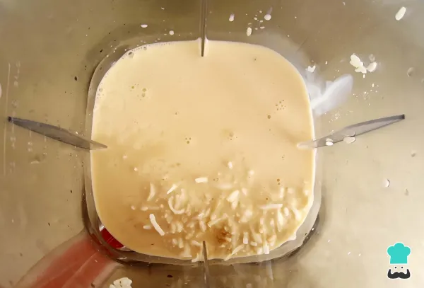
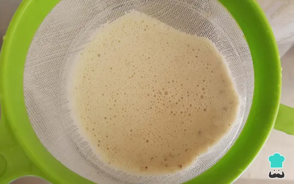

Para comenzar la receta de horchata de coco,en un recipiente coloca el arroz y la rama de canela ,
añade 1 taza y media de agua y déjalo en remojo durante un mínimo de 3 horas.
También puedes hacer este paso la noche anterior para dejar el arroz en agua durante toda la noche.
Cuando esté el arroz ya hidratado, procede a con el coco rallado, 1 cucharadita de esencia de vainilla,
la leche evaporada y el azúcar al gusto.También puedes usar leche condensada para sustituir el azúcar,
emplear edulcorante si buscas una receta de cocorchata más saludable o no utilizar endulzante.
Licua todo muy bien por 3 minutos a velocidad alta o hasta que obtengas una textura más suave.
Consulta nuestra Receta de leche condensada si te apetece prepararla en casa.
Después de licuar los ingredientes anteriores, vacía la mezcla en una jarra o recipiente pasándola por un colador
para retirar todo lo que no se pudo licuar,así tendrás una mezcla más liviana y suave;
presiona muy bien la mezcla en el colador para aprovechar al máximo los sabores.
Por último, agrega 1 litro de agua, hielo picado al gusto y sirve. Si lo prefieres, espolvorea un poco de canela en polvo,
cubre los bordes del vaso con coco rallado y la horchata de coco casera y tradicional estará lista para disfrutar.
Como podrás comprobar, queda una horchata de coco deliciosa, refrescante y nutritiva,
perfecta para combatir el calor. ¡Incluso puede ser una buena idea para negocio!